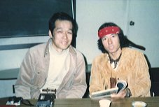
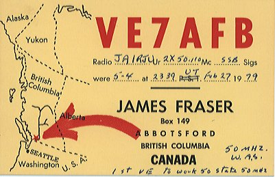
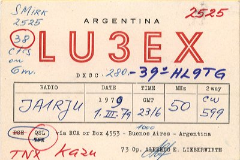

1979年Jan-Marの6m入感状況
[DX Report Jan-Mar.1979]
TIME:JST(UTC+0900)
Report from JA1RJU (PM95sq)
◎サイクル21のピークを迎えた1979年の入感リポートです。

01.Jan.1979
◎GuamのKG6JKSからのInfoによると、22:21-23:00zにKG6-KL7がオープン、
KL7CDG.AL7CL.KL7EOU.KL7HMHなどとQSO出来たと。昨年末の12/31にもKL7とQSOした。
02.Jan.1979
◎New Year Party は6mで1時間QRV(JA1RJU)。
相変わらずKG6-KL7間のコンデションは良く、KG6DXは22:00z頃から
KL7CDG.AL7CL.AL7CQ.AL7AP.KL7WE.KL7IDUとQSO出来たと。
04.Jan.1979
◎M/S(しぶんぎ座流星群)のスケジュール。JH7UPWとOne Way QSO。
05.Jan.1979
◎GuamのKG6DXとQSO(08:23-08:34JST)。Joeは12/31(23:35z)にW0RT(Kansas)とQSO。
1979.1/1にはKL7EOU、KL7HMHなどKL7と10数局QSOしたと。
◎GuamからQRVしていたKG6JIH・Jerryは1979.1/6にQRTし本国に帰国した。
彼のアンテナはKG6JIPにQSYした。KG6DX(08:00-09:15JST)入感。
06.Jan.1979
◎50.760MHzのZL-TV(18:45-09:10jst)。50.110MHzのKG6DX(09:10JST)入感。
07.Jan.1979
◎早朝からVKがFBにオープン。
VK3AMK 07:35 52.- SSB QSO
VK3YJE 08:29 52.- SSB
VK5ZMO 08:39 52.- SSB
VK3WK 08:45 52.- SSB
VK3AKK 08:49 52.- SSB QSO
VK3AUI 08:53 52.- SSB
VK3BGH 08:58 52.- SSB
VK2AUQ 09:05 52.- SSB
VK7JV 09:06 52.- SSB
VK3AQR 09:11 52.- SSB
VK5KK 09:15 52.- SSB
VK5ZZZ 09:21 52.- SSB QSO
VK3ZYO 09:27 52.- SSB QSO
VK5ARZ 09:33 52.- SSB
VK3YFU 09:39 52.- SSB
10.Jan.1979
◎日本短波放送「子門と照子のQSOジョッキー」(録音=13:30-14:00JST)
パーソナリティー：子門真人(JI1KLK)、大橋照子(JL1GPK)。情報コーナー(JA1RJU)
 ◎ こんばんは！新しい年を迎えて、皆さんも今年はあんな事もしたい、こんな事もしてみたいと、
いろいろ計画を立てられたのではないかと思います。
今年は是非VHF帯でのQRVを考えてみて頂きたいと思います。
今年から来年にかけてコンデションのピークを迎える年になりますので、VHFは大いに楽しめるはずです。
◎ こんばんは！新しい年を迎えて、皆さんも今年はあんな事もしたい、こんな事もしてみたいと、
いろいろ計画を立てられたのではないかと思います。
今年は是非VHF帯でのQRVを考えてみて頂きたいと思います。
今年から来年にかけてコンデションのピークを迎える年になりますので、VHFは大いに楽しめるはずです。
最近、良くサンスポット(太陽黒点数)が上昇していると言った事が話題になりますが、
この太陽黒点が増えたり減ったりする周期は約11年置きにピークがやってきます。この太陽黒点数が増えてきますと、
HFでも高い周波数帯での伝搬がFBになってきます。こう言う時期には50MHzでも普段あまり聞こえないところが入感する様になってくるのです。
去年は6mでもFBなDXの入感があって賑わったわけですが、今年はそれ以上にFBになると予想されています。
今回の太陽黒点数の上昇のサイクルは"サイクル21"と言っています。このサイクル21のピークは4、5年前の予想では、
上昇がかなり少ないのではないかと言われていました。しかし、既に昨年の暮れには100を超えて予想を遥かに上回りました。
最近出された予想では、20年前の1957-8年頃のサイクル19のピークに近い値まで上昇するのではないかとまで言われています。
ご存知の方も多いと思いますが、このサイクル19当時は、50MHzでFBなDX記録が生まれています。
現在の遠距離交信の世界記録となっているJA-PY(ブラジル)とのQSOや、ロングパスによるアフリカとのQSOなど、
多くのQSO記録がこのサイクルで行なわれています。当時はまだSSBではなくAMによるQSOでしたが、大変FBにQSO出来ています。
それではサイクル19当時にカナダで録音されたJAからの6mの電波を聞いて見たいと思います。(テープ再生)。
これはVE7AFBという局が録音していたものです。カナダでもJAからの電波がFBに入感していた事が判ります。
コンデションが良い時には6mでもこのように広範囲にQSOが出来るのです。
今年がサイクル19と同じぐらいまで上昇するかどうか判りませんが、かなりのところまで期待できそうです。
このカナダとはサイクル19以来まだJAからQSOが出来ていませんが、
昨年暮れにGuamのKG6DXがバンクーバーのVE7BLFという局とQSOしていますので、このサイクルもQRVしている局が居ることが確認されています。
JAからもまたQSOのチャンスは有りそうです。
さて、最近のコンデションのニュースですが、昨年暮れの12月23日にZL・ニュージーランドの全エリアが入感するなど、
相変わらずFBだった50MHzですが、今年に入ってからも1月7日の日曜日の朝に、VKの南側のVK3、7を中心にFBなオープンがあり、多くの局とQSO出来ています。
この時期にこの様にたくさんのDXの入感があるのは珍しい事ですが、これもサンスポットが上昇してきているせいでしょう。
GuamのKG6DXなどは朝の8-9時頃に時々入感しています。これから当分、午前中の太平洋方面がDXの稼ぎ時となるでしょう。
なお、この太平洋方面のオープン時には国内のスキャッターが良く聞こえる時もありますので、国内DXとのQSOの楽しみもあります。
それでは今年もFBにV・UHFでのDX QSOを楽しんで下さい。ではまた。(「子門と照子のQSOジョッキー」)
|
18.Jan.1979
◎16:36JSTにJA7BZUはポナペのKC6IN・西村さんとQSO。西村さんの1ST JA QSOだった。
VK2BHO 16:22 52.050 CW QSO
VK2ZRU 16:30 52.050 SSB QSO
VK2ZSL 16:36 52.050 SSB QSO
24.Jan.1979
KG6DX 09:02 50.120 SSB QSO
02.Feb.1979
◎日本短波放送「子門と照子のQSOジョッキー」(録音=14:00-15:00JST)
パーソナリティー：子門真人(JI1KLK)、大橋照子(JL1GPK)。情報コーナー(JA1RJU)
|

◎ こんばんは！いよいよ2月に入ってDXシーズン間近と言ったところですが、コンデションの方は今のところ、
チョット静かになっています。それでも、6mでは午前中に時々ハワイから50.104MHzのKH6EQIのビーコンが入感しています。
そして、午後にはニュージーランドのテレビの音声、50.740と50.750MHzとオーストラリアのテレビの音声、51.750と51.760MHzが入感していますので、
FBなDXオープンも間近と思われます。次にお聞かせする録音はニュージーランドのテレビの音声です。(テープ再生)。
去年の2月には2mでVKとJAが初めてQSOに成功しています。今年も夜間のTEPによるVKの信号が時々入感する様になってきました。
6mのこの信号が強力になってくると、2mでも伝搬の可能性が出てきます。
昨年と同様に今年も2mでVKとのQSOが確実に出来ると思われます。VK8GBは去年1年間で400局近いJAと2mでQSOしたそうです。
今年はコンデションも上がっていることですから、それ以上のQSOが期待出来そうです。
去年のQSOは西日本の局だけでしたが、今年はぜひ東日本にもコンデションが開いてもらいたいものです。
VK8GBの情報ではインドネシアからYB1CSとYB1PGの2局が2mにオンエアしているとの事です。
今年は2mでインドネシアとQSO出来るかも知れません。これらの局の他にも2mにQRVしてJAにアンテナを向けている局が何局かいます。
6mでもアクティブなパプアニューギニアのP29HV、グアムからKG6DXそれにKG6JDX、これらの局は144.100MHzをワッチしているそうです。
それと、北の方ではアラスカのアリューシャン列島のシェミアという島から出ているWA4TNV/KL7などです。
この局は144.150MHzを良くワッチしていると言ってきています。この他にも昨年たくさんの入感のあったロシアのサハリンや、
ウラジオストックのUA0の局、それにお隣の韓国からHM5HDなどが2mでJAにアンテナを向けているアクティブ局です。
国内QSO専門と思われがちなVHFのバンドでも結構オーバーシーズの局が入感します。
6mだけでなく2mでもこのように多くの局とQSOの可能性があるのです。コンデションの良い最近の2、3年は外国局にも目を向けてみて下さい。
VHFでは長い時間コールサインを言わないでQSOしている局が多いようですが「JA局をワッチしたが、コールサインを言わないので、
誰なのか判らなかった」と外国の局から言われた事があります。
ローカルとのQSOの時でも電波は意外なところに飛んでいるかも知れません、QSOの時にはお互いにコールサインを言う様に心がけたいと思います。
最後は6mの情報ですが、バンドのオープンの発見に欠かせないのはビーコンですが、6mで良く知られているのはハワイのKH6EQI、
南鳥島のJD1YAA、グアムのKG6DXのなどです。今年からニューヘブリデスから新しいビーコン局のYJ8PVが電波をだしています。
この局の周波数は51.995MHzで、10WにGPアンテナとの事です。今のところまだJAには入感していませんが、
春のDXシーズンには聞こえてくることと思います。南太平洋のコンデションを知るためには貴重な存在になりそうです。
それでは、FB DXを。今週はこの辺で。(「子門と照子のQSOジョッキー」2月2日録音)
|
03.Feb.1979
◎YJ8PVのBeacon(51.998MHz)入感(19:00-30分程度)。
04.Feb.1979
◎Guamの新局：WB9YFS/KG6
◎夜間にVK/ZLがOPEN。
ZL4LV 19:53 52.052 SSB
VK5KK 20:09 52.036 SSB QSO
VK5LP 20:01 52.045 SSB QSO
VK6ZFQ 20:17 52.053 SSB
VK6ZHM 20:17 52.035 SSB
VK4ZYA 20:31 52.020 SSB QSO
VK8GB 20:54 52.100 SSB QSO
05.Feb.1979
◎VK9NI(Norfolk I)がオープン。
11:07JSTに52.050MHzのSSBで気仙沼市のJA7NAM・小野寺さんはVK9NIとQSOに成功。
小野寺さんのCQに応答してきたVK9NIは初のJA-VK9/NのQSOとなる。
同時刻にJA1エリアではZL4LVが同じ周波数の52.050MHzで聞こえていたが、VK9の信号
は確認出来なかった。JA7NAMとQSOしたVK9NIがQRMがあると言っていたのはこの局を呼
ぶJA'sが聞こえていたのかも。
◎夜間はYJ8PVのBeaconが19:30-20:00JST頃に聞こえていた。
06.Feb.1979
◎午前中のコンデションは悪い。13:30JST頃からZLがオープン。
ZL3AAN(13:55).ZL3AQ(13:57)とQSO。
07.Feb.1979
◎午前、日中のコンデションは悪い。
◎19:30JSTから23:50JST頃までKG6's、VK'sがFBに入感。
KG6JKS(Joe).KG6JDX(Joe).KA6ADE/KH2(Joe).WB9YFS/KH2(Ron).WB5MNB/KH2.KG6DX(Joe)
K4JH.VK4ZJR.VK4JTV.VK6FFQ.VK6OX.VK5KK.VK8GB.YJ8PV/B.VK8VF/B.VK4RTL/B。
◎この日はKG6から北米がFBにオープンした(09:00-09:30JST)。
KH6JSI.N6HZ.W7YOZ.K7KV.VE7SL.K6THE。
KG6JKS 20:02 50.110 SSB QSO
KA6ADE/KH2 20:07 50.105 SSB QSO
KG6JDX 21:09 50.105 SSB QSO
P29BH 22:14 50.110 SSB QSO
KG6DX 23:05 50.110 SSB QSO
08.Feb.1979
◎午前中はVK/ZLのテレビのみ。
15:06JSTから52.023MHzでZL3AQが入感。JA7、8では多数入感。
ZL3LV 13:33 52.- SSB
ZL3AAU 13:53 52.- SSB
ZL3AAN 14:13 52.- SSB
ZL3AQ 15:18 52.023 SSB QSO
12.Feb.1979
◎午前中にKH6、KL7がオープン。
◎KH6IJ・Noseさんはこの日のオープンで約120局のJA'sとQSOした。
JA1 KH6EQI 09:30- 50.- SSB
KH6IJ 50.- SSB
KH6JSI 50.- SSB
KL7's 10:30 50.- SSB 12:15JST頃まで入感。
VK3YII 18:07 52.080 SSB QSO
VK8GB 22:40 52.050 SSB QSO
JA8 KL7CDG 10:46 50.112 SSB
KL7IDU 10:48 50.118 SSB
KL7CQ 10:49 50.118 SSB
KL7AP 10:52 50.118 SSB
AL7C 11:02 50.105 SSB
KL7JAI 11:18 50.125 SSB 12:40JST頃まで入感。
JA7 KH6EQI 09:15 50.- SSB
KH6JSI 09:32 50.- SSB
KH6IJ 09:32 50.- SSB
KL7CQ 11:30 50.- SSB
KL7JAI 11:30- 50.- SSB
KL7CDG 12:25 50.115 SSB 12:45JST頃まで入感。
14.Feb.1979
◎10:30JST頃からKL7が10分程度オープン。夜のVKがFB(20:00-23:00JST)
VK7DA 20:10 52.- SSB
VK3AUQ 20:12 52.- SSB
VK3AWY 20:16 52.- SSB
VK4RR 20:20 52.- SSB
VK4AJE 20:32 52.- SSB
VK3AQJ 20:44 52.- SSB
VK4ZJR 20:45 52.- SSB
VK3AMK 21:02 52.- SSB
VK4MS 21:13 52.- SSB
VK2ZQB 21:15 52.- SSB
VK6OX 21:16 52.- SSB
VK3OT 21:18 52.030 SSB QSO
VK3AQR 21:30 52.048 SSB QSO
VK3AZY 21:50 52.- SSB
VK3NM 22:02 52.- SSB
VK3YCK 22:03 52.- SSB
VK4JH 22:30 52.- SSB
VK8VF 22:30- 52.200 CW Beacon
VK4RTL 22:30- 52.440 CW Beacon
VK7RNT 22:30- 52.400 CW Beacon
15.Feb.1979
◎KL7がオープン(10:10-11:10JST)。夜のオープンはKA6ADE/KH2(23:30JST)のみ。
KL7JAI 10:10 50.105 SSB
KL7HMH 10:15 50.110 SSB
KL7WE 10:45 50.140 SSB
KL7JAI 11:10 50.129 SSB
16.Feb.1979
◎午前中に南米のオープン(10:30-10:45JST)あり。
LU6HFI 10:40 50.104 AM
LU4OHY 10:45 50.108 SSB
17.Feb.1979
◎午前中のコンデションはPoor。夜間のVK4、VK8はFBにオープン。
入感していた主な局:
VK4ZYA.VK4RO.VK6OX.VK6ZBC.VK4TL.VK4JH.VK4ZSK.VK4ZJR.VK4RTL/B.VK8GB.VK8VF/B
VK4WIT 20:06 52.035 SSB QSO
VK8GB 21:07 52.057 SSB QSO
VK4ZSK 21:51 52.023 SSB QSO
18.Feb.1979
KA6ADE/KH2 20:59 50.127 SSB QSO
◎午前中(08:40-)WA4TNV/KL7(50.109MHz)がオープン。
◎HS1SD(Thailand)とJR6HJDがQSOに成功。22:40JST頃から50.150MHzでQSOしたJR6HJDの後、
22:44JSTにJA6RGDがQSO。その後、22:53JSTにJR6ONTのCQに応答してきたHS1SDとJE6CXOもQSO。
この日のQSOは4局。QSOの際、HS1WRも近々6mにON AIRするとの事。
HS1SD:Jonas Eddy Gsimon Radio Patpong Rd,Bangkok Thailand.
Bureau: PO Box 2008 Bangkok Thailand.
19.Feb.1979
◎WB6NMTが得た情報によると、北米東海岸の局がZB2BLとQSOしたとのこと。
20.Feb.1979
◎SaipanのKG6ROがQRVを再開。20:05-21:00JSTに50.100MHzでオープン。
KG6RO 20:05 50.100 SSB QSO
VK4RR 21:43 52.032 SSB QSO
VK8GB 22:42 52.050 SSB QSO
KA6ADE/KH2 22:48 50.160 SSB QSO
KG6DX 23:25 50.110 SSB QSO
24.Feb.1979
◎南米・LUがオープン。この日入感した局は全てAM。
LU6HFI 10:46 50.099 AM (JA4MBM QSO)
LU6OTI 10:55 50.098 AM (JA6IMJ QSO)
26.Feb.1979
◎早朝、W/LUがオープン。
K5CM 08:50 50.091 CW (No QSO)
W6XJ 09:00 50.111 CW QSO
W6XJ 09:01 50.110 SSB QSO
(WB6NMT 09:00 50.135/165 SSB/CW)
LU6HFI 09:55 50.- AM (JA6LLA QSO)
28.Feb.1979
◎北米(W/KL7)、南米(LU/PY)が入感。
VE7AFB 08:39 50.110 SSB QSO
WA7KYZ 08:40 50.110 SSB QSO
K7KV 08:45 50.115 SSB QSO
K7CAZ 08:51 50.105 SSB QSO
WB6NMT 08:55 50.135 SSB QSO
WA6BYA 09:10 50.105 SSB QSO
LU6EHU 09:06 50.171 AM
LU5EMM 09:20 50.116 SSB
LU3DCA 09:33 50.114 SSB
LU6EAM 09:44 50.093 SSB
LU3EX 09:46 50.084 CW
LU4HFY 10:42 50.090 AM
LU3EX 11:03 50.100 CW
LU6HFI 11:04 50.- AM
LU1HAH 11:09 50.190 AM
LU4HEI 11:17 50.- AM



◎他にも次の局が入感していた。
VE7SL(CW).K6HCP(CW).LU3HFU(SSB).LU9HGG(AM=YL).LU2CE(AM).LU4BBI(AM)
PY5BAB(SSB).PY2XB(SSB)
01.Mar.1979
◎1エリアで08:40-09:40JSTにWが入感。WA6JRA(09:00).K6HCP.K6TZI
8エリアで09:18-10:40JSTにLUが入感。LU8AHW.LU3EX。
◎JA9LJは17:00JST頃に50.110MHzでFO8DRとQSO。
WA6JRA 09:13 50.125 SSB QSO
WA6JRA 09:27 50.125 CW QSO
WA6JRA 09:39 50.125 CW QSO
K7KV 08:45 50.115 SSB
K7CAZ 08:51 50.105 SSB
02.Mar.1979
◎07:50-09:40JST頃にJA8で南米が入感。
LU1DAU.LU8AHW.LU3EX.LU5EMM.LU3DCAなどの南米に続いてAH6AP.KH6NS.KH6JSIが入感。
◎KX6BQ(Marshall Is)によると6mにQRVしている局はまだ居ない。
◎H44PT・Peterは近々6mにQRVする予定。
LU3EX 08:18 50.093 CW QSO
LU8AHW 08:25 50.103 CW QSO
03.Mar.1979
◎南米がオープン(09:55-10:25JST)。LUのフェードアウト後にKH6IAAが入感。
LU8AHW 09:52 50.103 CW QSO
LU3DCA 10:05 50.133 SSB QSO
LU6EAM 10:20 50.142 SSB QSO
LU1DAU -- 50.- SSB
LU7DJZ -- 50.- SSB
LU5EMM -- 50.- SSB
LU3EX -- 50.- CW
LU9EAE -- 50.- AM
04.Mar.1979
◎午前中に南米が入感。08:56JST頃から20分ほどのオープン。
LU3DCA.LU8AHW.LU5EMM.LU8BF & WA4TNV/KL7。
◎13:15JST頃からZL4LV.ZL4TLが入感。22:08JST頃からJA4エリアでHS1SDとQSO(50.147MHz)。
◎HS1SDがオープン。JH4IGJ、JA4MBM、JA4VLWがQSO。
VK4DV 14:25 52.033 SSB QSO
VK4AMH 14:29 52.061 SSB QSO
VK4ZBH 14:32 52.061 SSB QSO
VK2ZDK/VK4 14:41 52.040 SSB QSO
VK4ZSK 20:23 52.040 SSB QSO
KA6ADE/KH2 21:27 50.120 SSB QSO
05.Mar.1979
◎早朝にW/LUがオープン。N6BFG.W6SJR.K6RMJ.W6XJ(06:30-07:30JST)。
◎JA8では南米がオープン。LU3DCA.LU3EX.LU8AHW.LU5EMM.LU6FA(06:30-07:30JST)
◎この日はVK4と北米(W6.7)もオープンしていた。
◎VK4DVからの情報によると、2300MHz帯でVK5MC-VK6KZが2,109KmのQSOに成功、新記録達成。
◎TI2NA(Costarica)は50.080MHzでBeaconを出している(12:00-13:30JST頃)。
VK4DV 11:08 52.040 SSB QSO
VK4ZJB 17:38 52.040 SSB QSO
VK4AMF 17:44 52.050 SSB QSO
VK4ZHG 18:03 52.063 SSB QSO
06.Mar.1979
◎11:15JST頃からPY1ROがオープン。JA5、JA6の10局程度がQSO。
夜間にYJ8PV、FK8AXが強力に入感していた。
FK8AX 20:25 52.023 SSB QSO
07.Mar.1979
◎早朝、南米が入感。
LU3EX 08:30 50.099 CW
LU8BF 08:35 50.155 CW
LU3DCA 08:35 50.- SSB
LU4DFZ 08:40 50.155 AM
LU5EMM 08:47 50.113 SSB QSO
09.Mar.1979
◎JA4.5.6でPY、LUが入感。(PY5BAB.PY5WKC.PY2XB.CE3OK)
◎PY1APSからの情報によると、彼は5月12日から1週間の予定でPY0(Fernand de Noronha)
へのDX-Peditionを計画している。CALLはPY7APS/0。
JA1HCF/JG1LKF・武内さんは3/11からサンパウロを訪問の予定。
PY1APSと14.230MHzでスケジュールを持っている。
◎日本短波放送「子門と照子のQSOジョッキー」(録音日)
 パーソナリティー：子門真人(JI1KLK).大橋照子(JL1GPK)
情報コーナー：小笠原一夫(JA1RJU)
パーソナリティー：子門真人(JI1KLK).大橋照子(JL1GPK)
情報コーナー：小笠原一夫(JA1RJU)
|
◎ こんばんは！今日は春のDXの入感状況からお知らせしたいと思います。
期待どおりの連日のDXオープンで、6mは休む間もないほどFBなコンデションになっています。
この春のDXシーズンに最も期待されていた南米のオープンは、2月16日に初めてありました。
この日、10時30分頃に広島のJA4MBM・吉田さんがアルゼンチンのLU6HFIと50.104MHzでQSOしました。
このLU6HFIと言う局はA3の局でしたが、この日のコンデションはあまり良くなくて、
コールサインをコピーするのがやっとといった状態だった様です。
しかし、このLU6HFIは2月24日にも再び入感して、JA4の局が数局QSOしています。
この日は信号も強力でピークでRS59で入感していたとの事です。また、この日はJA6IMJ・池田さんは、
LU4OTIという局とQSOしています。この日は他に2-3局入感していたとの事ですが、全てA3の局だったこともあって、
弱い信号ではかなり受信が困難だった様です。
ところが、2月28日になって、この日は朝からFBなコンデションになりました。
まず、朝8時30分頃にカナダのVE7AFBという局が入感してきました。この局とは私、JA1RJUが8時39分に初めてQSOしています。
その後、沢山の局が呼んだのですが、Wの局が同じ周波数で出てきたこともあって、
このVE7の局とはその後誰もQSO出来なかった様です。それでは、この日のカナダのVE7AFBの入感状態を聞いてみましょう。
(テープ再生)。この日のWの入感は9時過ぎにフェードアウトしましたが、10時30分頃になって、今度は南米が入感してきました。
SSBとAM(A3)でLUの局が沢山入感して、この日は多くの局がQSO出来ました。このアルゼンチンの局の他に、
ブラジルのPY5BAB、PY2XBの入感もあって、数局がQSO出来ています。この南米のPYと、先ほどのカナダのVE7の入感は、
サイクル19以来ですから、実に20年ぶりの入感でした。南米とのコンデションは3月に入ってからもFBにオープンしています。
これからもFBなオープニングが期待出来ますので、アンテナを東方向に向けてワッチしてみて下さい。
他に珍しいところではノーフォーク島のVK9NIとのQSOがあります。このQSOはちょっと古いものですが、
2月5日に気仙沼のJA7NAM・小野寺さんが初めてQSOしています。このVK9NIとのQSOで、JAからのQSOカントリーがまた一つ増えた訳ですが、
このQSOから3日後の2月8日に宮崎市のJR6HJD・今井さんがタイのHS1SDとQSOしています。
この日、22:23(午後10時半）に国内スキャッターの混信の中から"CQ JAPAN"をコールしているHS1SDを受信、
22:25JSTにQSOしたものです。HS1SDとこの日のQSOは今井さんだけだった事や、HSからのQRVが突然だったことなどもあって、
最初はニセモノではないかと言われていましたが、その後の情報で本物である事が判りました。
HS1SDは2月18日にもJA6を中心に入感、JR6HJDの他に、鹿児島のJR6RGD局ほか2-3局がQSOしています。
また、3月4日にもJA4でこの局とQSOしています。
HS方面とのコンデションはこれからがFBになりますので、アクティビティさえあれば楽にQSO出来るものと思われます。
今後のQRVを期待したいと思います。それでは、また。(「子門と照子のQSOジョッキー」)
|
10.Mar.1979
◎西日本でPY、LUがオープン。
◎ケルマデック(Kermadec Is)島のZL1BIQ/KとJA8がQSOに成功。
この日、52.020MHzでCQを出していたZL1BIQ/Kと10:16JSTに北海道・岩見沢のJA8RKC・森本さんが
初QSO。その後、JA8RC(10:18)、JA8VOM(10:20)がQSOに成功した。
この3局がQSOした後、ZL1BIQ/Kはフェードアウトしてしまった。Kermadec Is(ZL8)とJAのQSOは初。
ZL1BIQ/KはTS-520+自作トランスバーターと3eleでQRVしている。
◎JA6IMJは23:00-02:00JSTに入感していたHS1SDと50.145MHzでQSO。
VK5ARZ 21:31 52.030 SSB QSO
VK4JH 21:36 52.030 SSB QSO
VK4ZYA 21:51 52.030 SSB QSO
12.Mar.1979
◎早朝から南米/北米がオープン。
08:30JST頃からJA7NAMはPY5BAB.PY5NV.PY2XB.PY1RO.PY1DMQ.LU1DAU.LU6BF.LU5EMM.LU3DCAとQSO。
JA1エリアでは08:15JST頃からKH6EQI.WA4TNV/KL7.KH6XX(50.110MHz)が入感。
10:10JST-11:10JSTにかけてPY1DMQ.PY1RO.PY2XB.PY5BAB.PY5NV.PY2XB/B(50.058)が入感。
◎JA4MBM・吉田さんの情報によると、3月11日10:10JSTにKZ5AB(CanalZone)と50.090MHzのCWでQSO。
本日(12日)の09:20JSTにはJH4QHOもこの局とQSOしたと。JA-KZ5は初QSOだが、現在KZ5ABに確認中。
13.Mar.1979
◎JA1エリアを中心に南米がFBにオープン。JA8ではVK2と弱いLUが聞こえていただけ。
PY2XB 10:50 50.135 CW
CE3OK 10:55 50.120 SSB
CE4CP 11:12 50.102 SSB
PY1RO 11:43 50.091 CW
PY2DM -- 50.097 CW
PY5BAB -- 50.154 SSB
LU1HAH -- 50.190 AM
LU2BG -- 50.122 SSB(LSB)
LU3EX 13:47 50.100 CW
LU4DFZ -- 50.- AM
LU4HFY -- 50.089 AM
LU6HFI -- 50.- AM
LU7FA -- 50.120 SSB
LU7DJZ -- 50.137 SSB
LU7MAY -- 50.114 SSB
LU8AHW -- 50.096 CW
LU8EEM -- 50.102 SSB
◎19:15-19:25JST頃に52.050MHzでVK9NIが入感。JA1PVI.JA2DDNらがQSO。
夜間はこの他にDU1GF.KA6ADE/KH2.K9PNT/DUなどが入感。
14.Mar.1979
◎08:30JST頃からKL7JJH(50.110MHz)が入感。
19:50-21:00JSTにKC6IN(50.115)、DU1GF(50.105)が入感。
KC6IN 20:51 50.115 SSB QSO
DU1GF 22:50 50.105 SSB QSO
15.Mar.1979
◎07:50-08:50JSTにKL7HMH(50.110).KL7JJH(50.115).AL7C.KL7JAIが入感。
夜間(21:00-)にP29ZNLが入感。
KL7JJH 08:42 50.115 SSB QSO
P29ZNL 20:59 52.050 SSB QSO
16.Mar.1979
◎早朝にWA4TNV/KL7(50.113MHz)が短時間入感。
◎VK2YHGはYJ8PDのDX-Peditionに向け、出発した。運用は10日間の予定。
RIGはTS-600+3ele。既にQSLを250枚印刷したと。
VK6OX 15:43 52.050 SSB QSO
17.Mar.1979
◎3月11日にJA4でQSOしたとされるKZ5ABについて、W6XJからの情報ではこの様な局はQRV
していないと。
VK4ZSK 19:30 52.050 SSB QSO
18.Mar.1979
◎KG6DXからの情報によると、VQ9(Chagos Is)から2週間運用を予定しているVQ9KK(OP.KP4KK)
はChagosに向っている。KG6JDXが本土からGuamに向う飛行機で一緒だったと。
VQ9KKのRIGはTV-502、TV-506にAS66(6m)。KG6JARから購入した。
◎夜間の太平洋方面がFBにオープン。
◎H44DX(Solomon)が入感、52.050MHzで19:25JSTにQSOした高知のJA5FDR・岸田さんが初の
H44-JAのQSOだった。このオープンでJA1エリアから20局程度がQSOに成功した。
YJ8PDも同時に入感していた。
19.Mar.1979
◎17:00-17:45JSTに50.107MHzでFO8DRが入感。19:50JST頃からYJ8PDが入感(50.125/115)。
この日は他にKC6IN(50.106)、KG6DX(50.110)、P29BH(50.110)、H44DX(52.020/50.100)が
入感。
FO8DR 17:13 50.107 CW QSO
20.Mar.1979
◎夜間のコンデションはFB。
YJ8KM 21:20 50.125 SSB
P29BH 21:22 50.120 SSB
YJ8PD 21:30 50.140 SSB
KA6ADE/KH2 22:07 50.200 SSB QSO
KG6DX 22:50 52.035 SSB QSO
KG6JDX 22:50 52.035 SSB QSO
DU1GF -- 50.104 SSB
21.Mar.1979
◎13:00JST頃からFK8AB、FK8AX入感(52.035)。
夜間のコンデションはFB。22:00JST頃にHS1SD(50.030)とJA1エリアでQSOのニュースあり。
◎インドネシアから6mでYB0Xの運用を予定(4/28-5/8)。周波数は50.110/52.050MHz。
インドネシア政府に免許を申請中(JA1UT・林さんから)。
YJ8PD 19:29 52.085 SSB QSO
22.Mar.1979
K9PNT/DU2 00:10 52.045 SSB QSO
24.Mar.1979
◎夜間の南太平洋方面のコンデションがFB。
VK2、4と同時に、19:00JST過ぎにKH6EQI、KH6JSTが南東のバックスキャッターで入感。
VK4WS 18:41 52.073 SSB QSO
VK4ZGI 18:41 52.073 SSB QSO
VK2ZNS 18:58 52.075 SSB QSO
VK2ASZ 19:09 52.037 SSB QSO
VK2ZZY 19:12 52.030 SSB QSO
VK2BA 19:15 52.020 SSB QSO
VK2BHH 19:17 52.053 SSB QSO
VK2ZQX 19:23 52.097 SSB QSO
25.Mar.1979
◎VQ9KKはDipoleで6mに18:00z前にQRVしている。周波数は50.100-50.110MHz。
◎JA6VLW・森下さんは14:47JST頃から40分間、南アフリカのZS6LNをRST519で受信。
アンテナの方向は西南西、周波数は50.056MHzだった(本人から電話で確認)。
◎Cook Is.のZK1AAが近日中にQRVする予定(W6XJより)。
VK4XZ 17:10 52.040 SSB QSO
VK4ZWH 17:36 52.040 SSB QSO
VK4DO 17:45 52.040 SSB QSO
VK4ZPG/P 18:06 52.070 SSB QSO
VK4RO 18:33 52.090 SSB QSO
26.Mar.1979
◎JA1エリアで南米が入感(11:25-12:45JST)。
入感していた局はLU4HLM.(50.107).LU8MBL(50.120).PY1RO(50.101).PY2XB(50.058)。
27.Mar.1979
◎午前中の南米がFB。
LU6HFQ 09:40 50.- SSB
LU6HFI 09:50 50.107 AM
LU4HFY -- 50.089 AM
LU3DCA -- 50.105 SSB
LU8MBL 10:41 50.125 SSB QSO
LU3EX 10:46 50.094 CW QSO
LU5FCH 10:52 50.103 AM QSO
PY1RO 11:15 50.096 CW QSO
CE3OK -- 50.124 SSB
VK2QF 12:18 52.050 SSB QSO
VK3OT 12:40 52.035 SSB QSO
FO8DR 16:00- 50.- SSB
28.Mar.1979
◎HL9TGがLU8AHWとQSOし世界最長記録の声明を出した。
LU8AHW-HL9TGは12,056マイル(19,401Km)
LU3EX-JA6FRは11,918マイル(19,179Km)
PY3BW-JA6FR間は19,810KmとなるのでJA6FR・故大島さんの記録を破る事は出来ない。
* HL9TG-PY(ポートアレグレ)は19,105Km
29.Mar.1979
◎10:00JSTにLU1DAUが入感(50.110)。南鳥島のJD1YAAのBeaconが50.110MHzで入感。
VK8GB 20:05 52.050 SSB QSO
31.Mar.1979
◎チャゴス諸島・ディゴ・ガルシアのVQ9KK・Billは近々6mの6eleを上げてQRVする予定。
(50.110MHzで23:00JST頃）
◎HL9WIは12:20JST頃にPY1ROとCWでQSO。
KG6DX 21:45 50.110 SSB QSO
KA6ADE/KH2 21:45 50.110 SSB QSO
KG6JDX 21:45 50.110 SSB QSO
[ディゴ・ガルシア(Diego Garcia)＝VQ9]
総面積約1,100Km平方の、東経70度-72度付近に位置する英国領の群島。
最南部にあるディゴ・ガルシア島を主島にサロモン、ペロス、バノスの島々が
ある。ディゴ・ガルシアにはアメリカ海軍通信基地がある。
1810年以来、イギリスの植民地でモーリシャス(Mauritius)の属領であったが、
1965年にアルダブラ(Aldabra)、ファルカル、デロシュの各諸島とともにイギ
リス領インド植民地となった。
|